Village classéL’un des Plus Beaux Villages de France
300 m²Maison en pierre entière, sur 3 étages
15personnes · 5 chambres dont une suite familiale
5salles de bain privées, dont 2 avec baignoire
Village classéL’un des Plus Beaux Villages de France
La maison
Une ancienne boucherie devenue maison d’hôtes
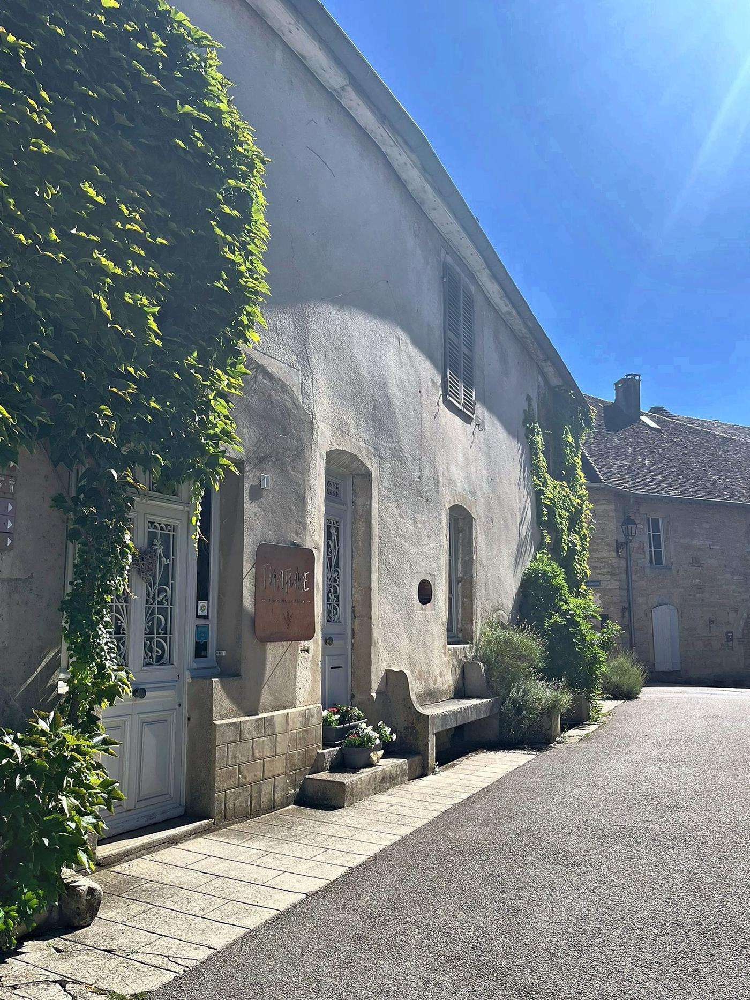
L’Histoire
Construite au cœur d’un village médiéval, cette bâtisse a d’abord été une ferme puis la
boucherie du village. Depuis, nous avons repris la maison en juillet 2016, à une
petite bande d’amis, pour en faire un lieu d’accueil au cœur de notre superbe région.
Nous avons fait le choix de mêler le cachet historique au côté contemporain et
moderne de cette maison. Vous retrouverez donc partout dans la maison des traces de
son histoire : la devanture, sa porte traditionnelle à
clochette, les carreaux de ciment d’époque…
Trois cents mètres carrés répartis sur trois étages entièrement
rénovés. Cinq chambres, chacune avec sa salle de bain et son WC privés.
« Nature, Peinture : naturellement simples, sans chichis, amoureux de la Nature. »
Les Espaces
Les équipements de notre logement
Cuisine entièrement équipée
Wifi
Lave-linge et sèche-linge gratuits
Cheminée à bois
Draps en lin et serviettes en coton
Tout l’équipement bébé
Animaux acceptés
Stationnement gratuit dans la rue
…
Nous trouver
1 rue de l’Église, 39210 Château-Chalon.
L’affichage de la carte dépose des cookies Google.
Les chambres
Toute la maison, ou juste une chambre
Notre maison est disponible en formule gîte ou chambres d’hôtes. Elle est faite pour
accueillir jusqu’à 15 personnes, avec ses 5 chambres (salle d’eau ou salle de bain)
dont sa suite familiale.
Jusqu’à 15 personnes
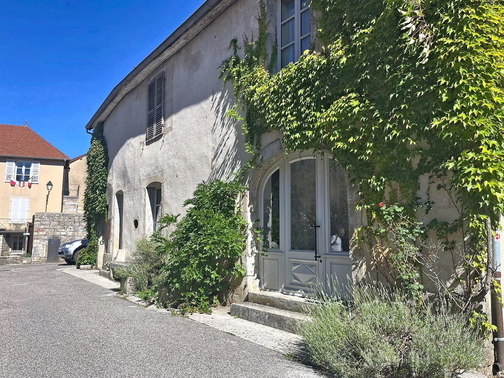
La maison entière
GÎTE 300 M² · JUSQU’À 15 PERSONNES
Toute la maison pour vous : 300 m² sur trois étages, cinq chambres, deux cuisines, un salon avec cheminée et un jardin clos que personne ne traverse.
5 chambres dont une suite familiale
5 salles de bain privées, dont 2 avec baignoire
2 cuisines équipées
Salon avec cheminée
Jardin clos
Maison sur 3 étages
Tarif sur demande
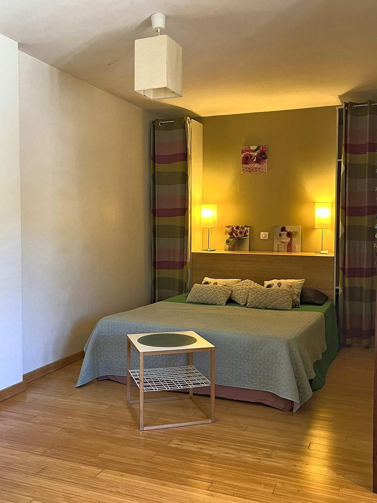
Chambre 1 — En Messepierre
CHAMBRE · 27 M² · 2 PERSONNES
Vingt-sept mètres carrés, douche balnéo, deux dressings et un coin salon spacieux.
Douche balnéo et double vasque
WC séparés
Deux dressings
à partir de 92 € / nuit
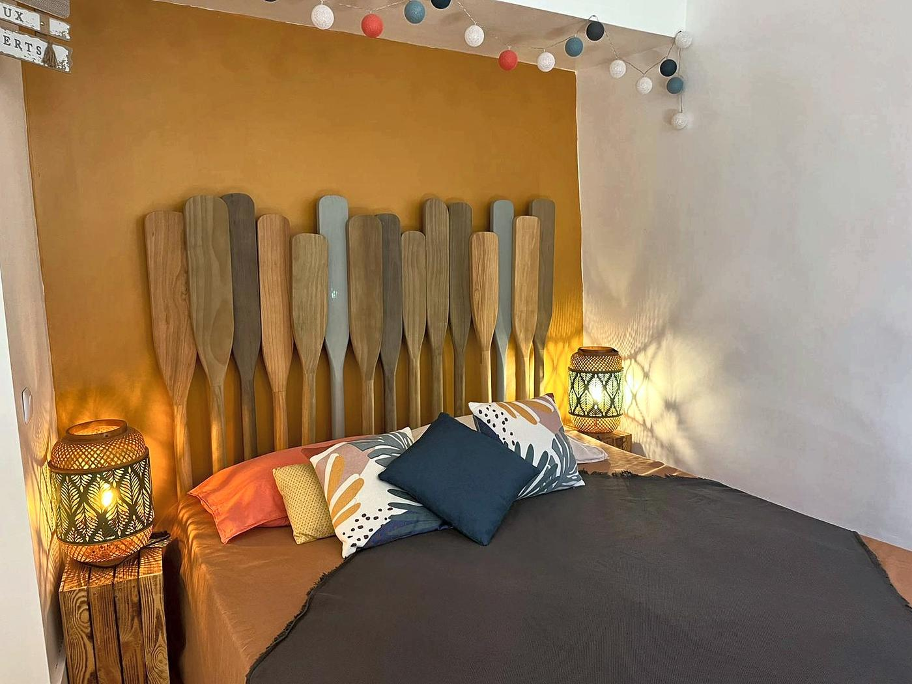
Chambre 2 — La Mercantine
CHAMBRE · 36 M² · 2 PERSONNES
Trente-six mètres carrés, baignoire et douche : la plus grande des chambres doubles.
Baignoire et douche
WC séparés
Coin salon avec canapé
à partir de 96 € / nuit
54 m² · la plus grande
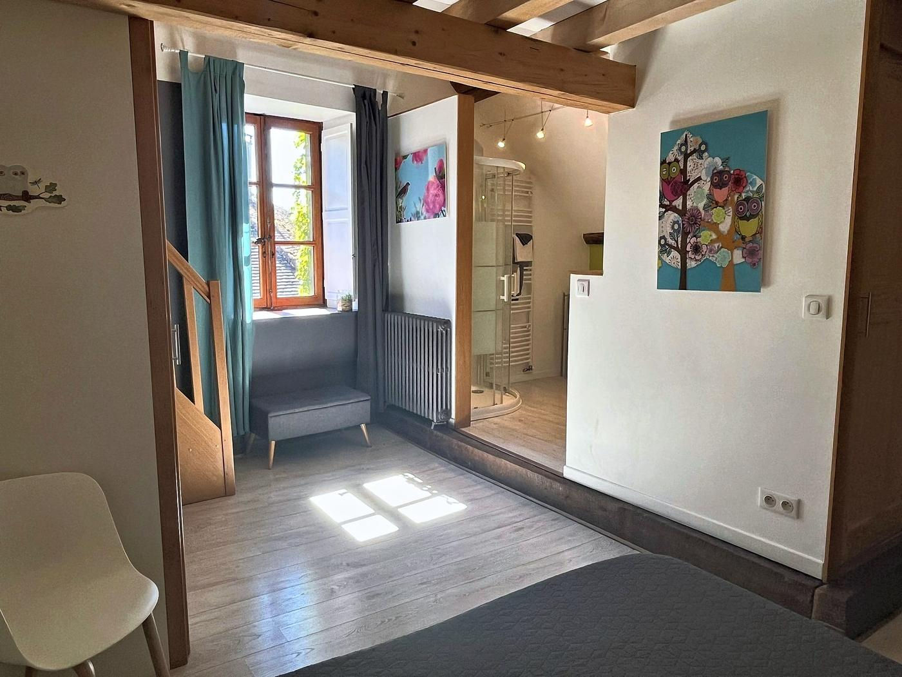
Chambre 3 — Les Terrasses
SUITE · 54 M² · 6 PERSONNES
Cinquante-quatre mètres carrés en quatre espaces : chambre, mezzanine, salon privatif et salle de bain.
Jusqu’à 6 personnes
Baignoire et douche
Salon privatif et mezzanine
à partir de 110 € / nuit
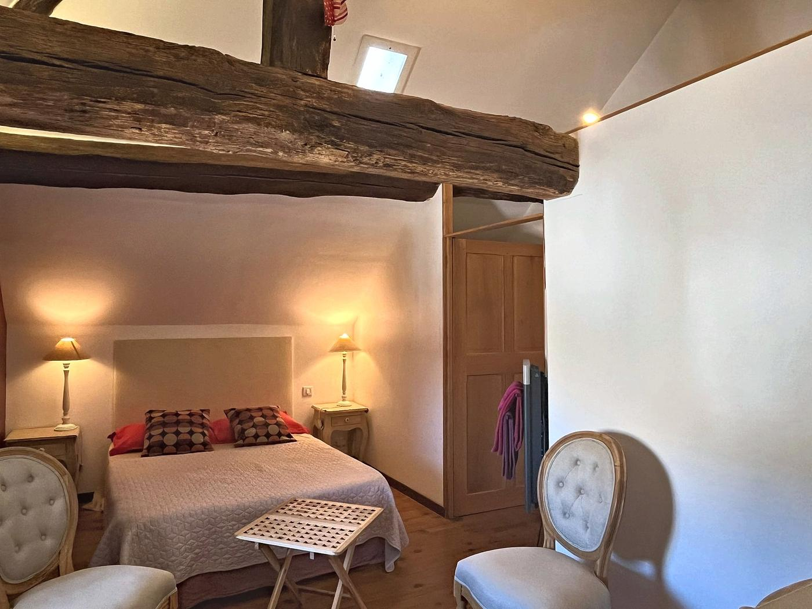
Chambre 4 — Le Colombier
CHAMBRE · 17 M² · 2 PERSONNES
Dix-sept mètres carrés, salle de douche indépendante et petit coin salon.
Salle de douche privée
WC séparé
Petit coin salon
à partir de 82 € / nuit
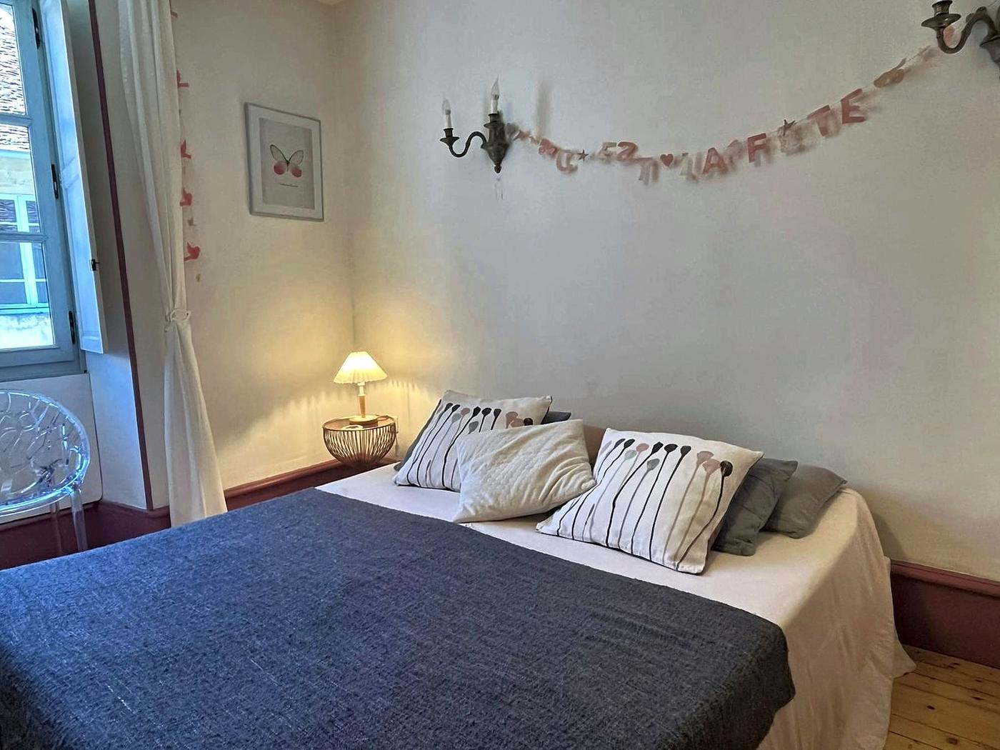
Chambre 5 — Le Chanaie
CHAMBRE · 20 M² · 2 PERSONNES
Vingt mètres carrés modulables : deux lits une place, ou un grand lit double.
Salle de douche privée
WC séparé
Lits modulables
à partir de 82 € / nuit
Prestations Supplémentaires
Ce que nous proposons nous-mêmes
Pour compléter votre séjour, nous proposons plusieurs prestations
complémentaires :
Toute l’année
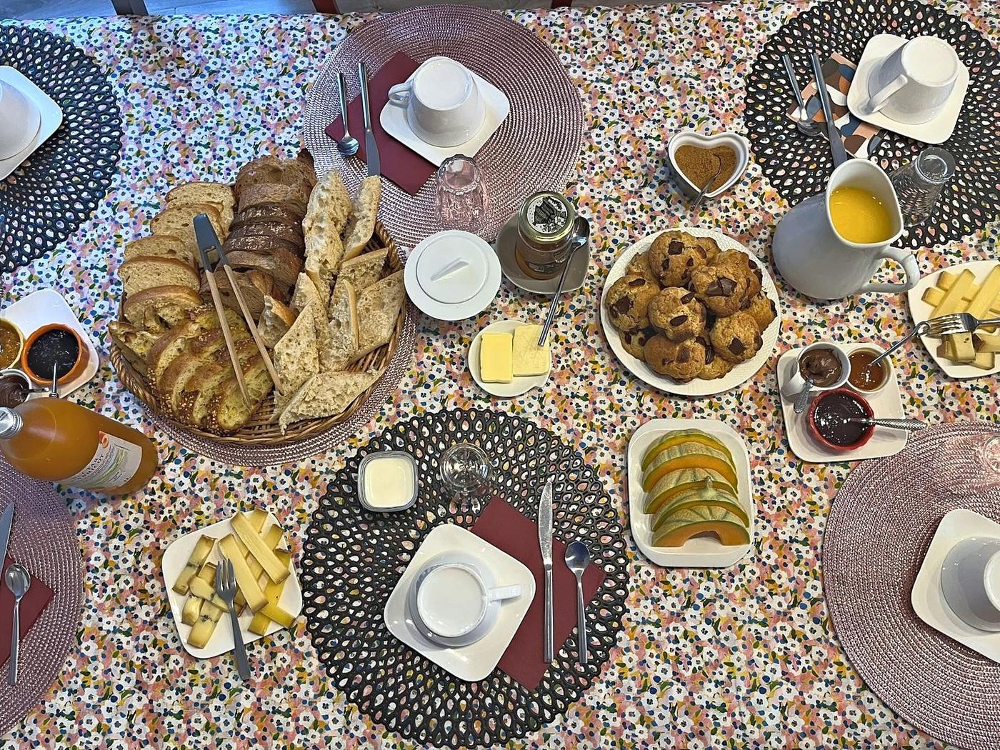
Petits déjeuners maison
Servis dans la cuisine-salle à manger, avec des produits frais et faits maison.
Été
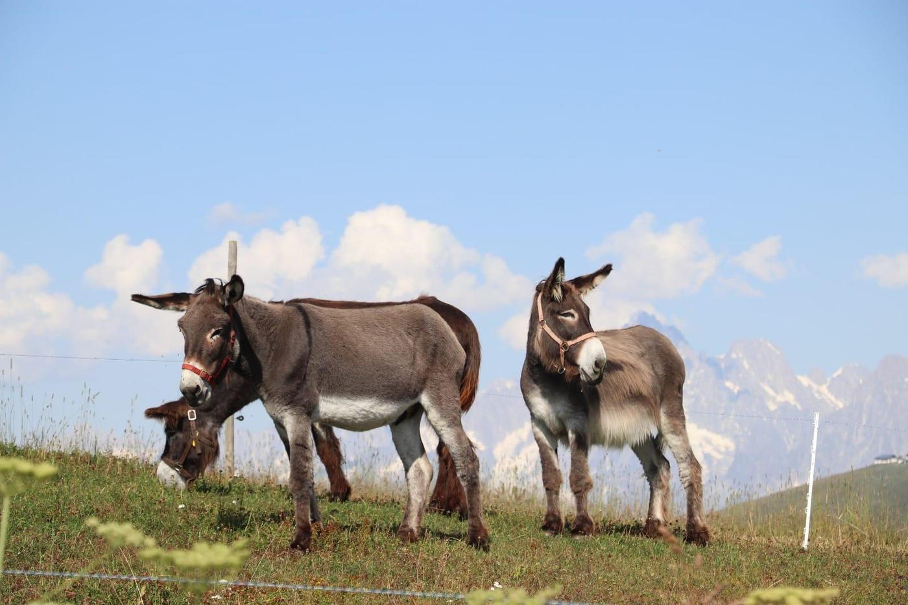
Randonnée avec ânes de bât
Trois ânes, un sentier, et le Jura qui s’ouvre devant vous.
Hiver
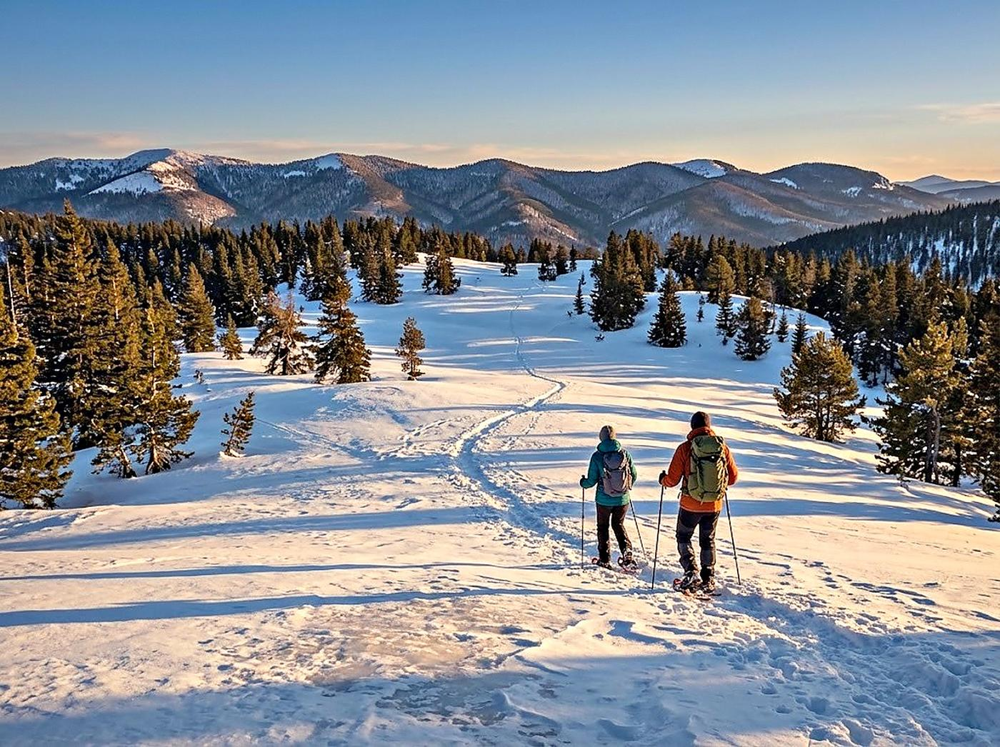
Randonnée en raquettes
Randonnée dans le Haut-Jura, accompagnée d’un guide de moyenne montagne.
Autres prestations sur demande
Œnologie, pêche, artisans : le réseau que nous avons tissé depuis 2016.
Galerie
La maison, le village et le Jura
Cliquez sur une photo pour l’agrandir.
Activités
Une région riche, avec beaucoup de choses à découvrir
Château-Chalon est le berceau du Vin Jaune, situé au cœur du vignoble jurassien,
proche de plusieurs grands lacs et lieux emblématiques à découvrir. Nous sommes
également à 1 h des pistes de ski du Haut-Jura, parfait pour faire l’aller-retour
à la journée.
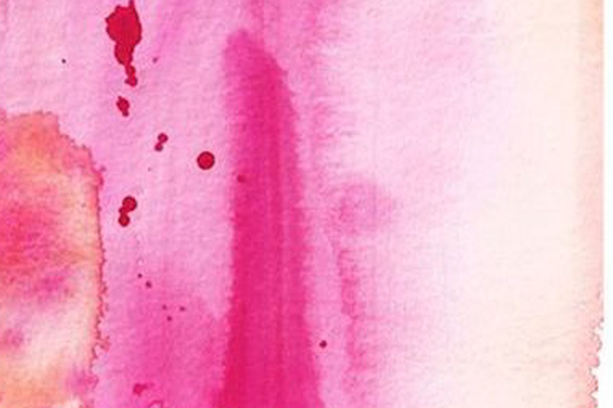
Vins & Caveaux
Le berceau du Vin Jaune, à pied depuis la maison
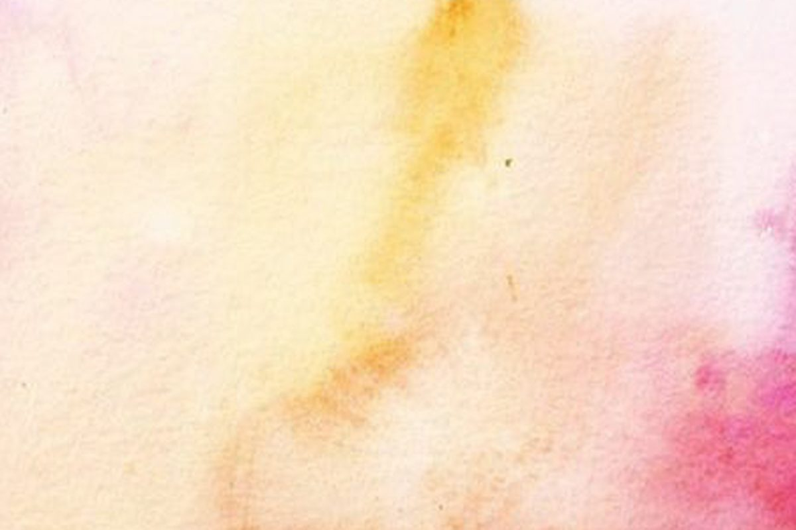
Visites & Patrimoine
Abbayes, grottes, salines classées UNESCO
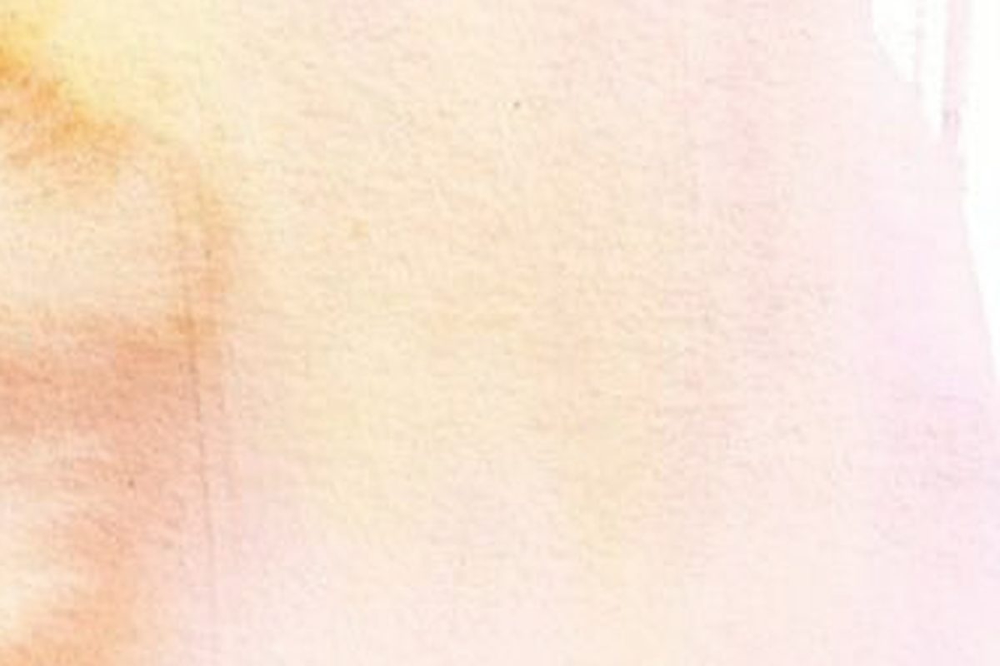
Lacs & Cascades
Eaux turquoise, reculées et belvédères
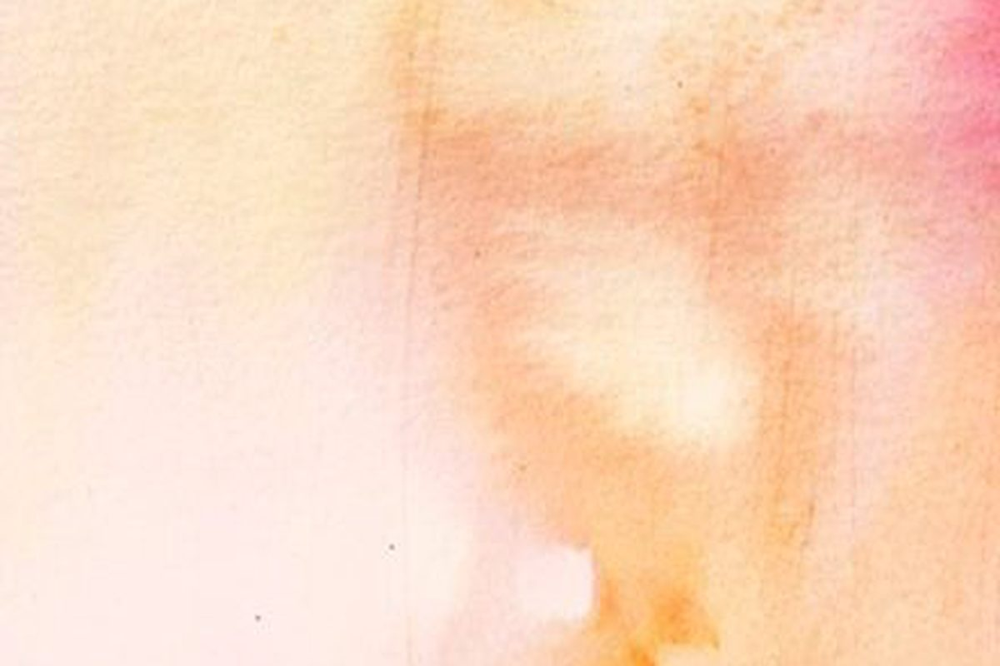
Restaurants
Comté, morilles et une étoile Michelin à trente minutes
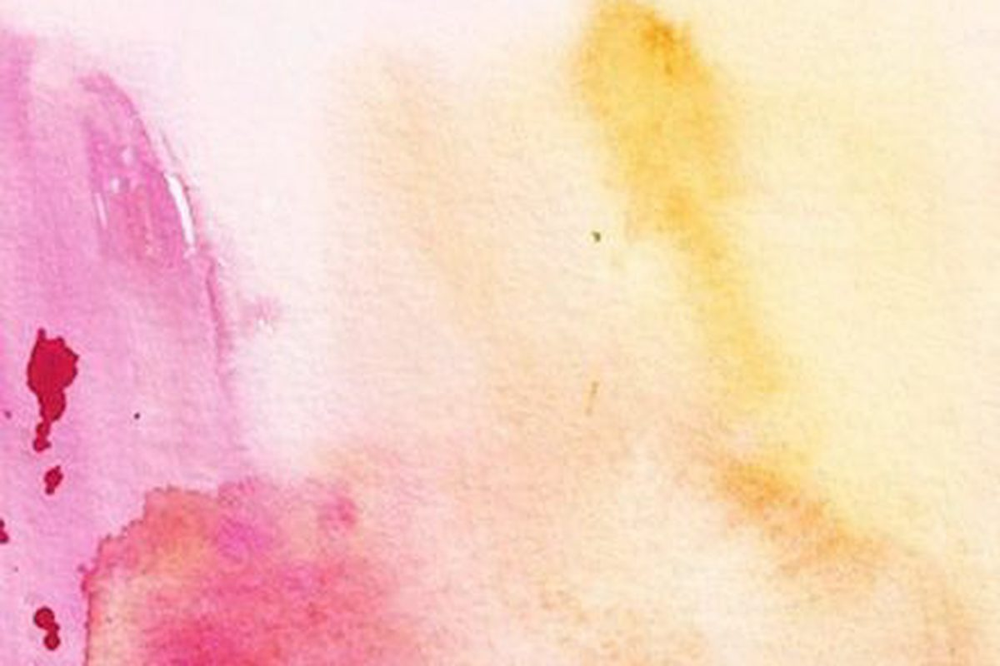
Randonnées
Des sentiers au départ du village jusqu’au Haut-Jura
Contact
Écrivez-nous, nous répondons
Marie affiche 100 % de taux de réponse sur Airbnb depuis huit ans. En direct, vous
lui parlez et vous évitez les frais de service.
Rez-de-chaussée, cheminée à insert, des espaces ouverts et cosy à la fois.
Ce qui vous attend
Une cheminée à insertOn l’allume et la pièce devient le point de ralliement du groupe.
Les carreaux de ciment d’origineCeux de la ferme, puis de la boucherie du village. Rien n’a été refait à l’identique : ils sont d’époque.
De plain-pied avec la cuisineAu rez-de-chaussée : on passe de la table au canapé sans traverser la maison.
Fait pour les longues soiréesAssez grand et confortable pour passer vos meilleurs apéros ou soirées jeux de société près du feu.
En quelques mots
Au rez-de-chaussée, avec sa cheminée à insert. C’est la pièce où le groupe se retrouve le soir, et où l’on traîne le matin. C’est le lieu de vie central de la maison.
Réponse sous 24 h · 100 % de taux de réponse sur Airbnb depuis huit ans · en direct, sans frais de service
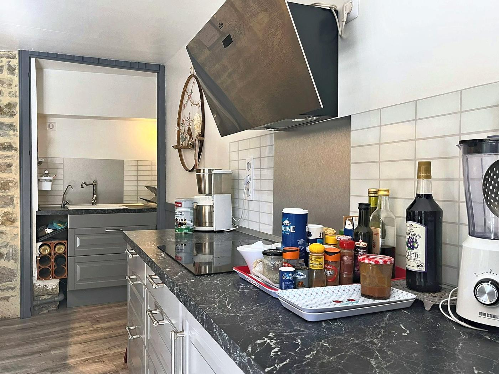
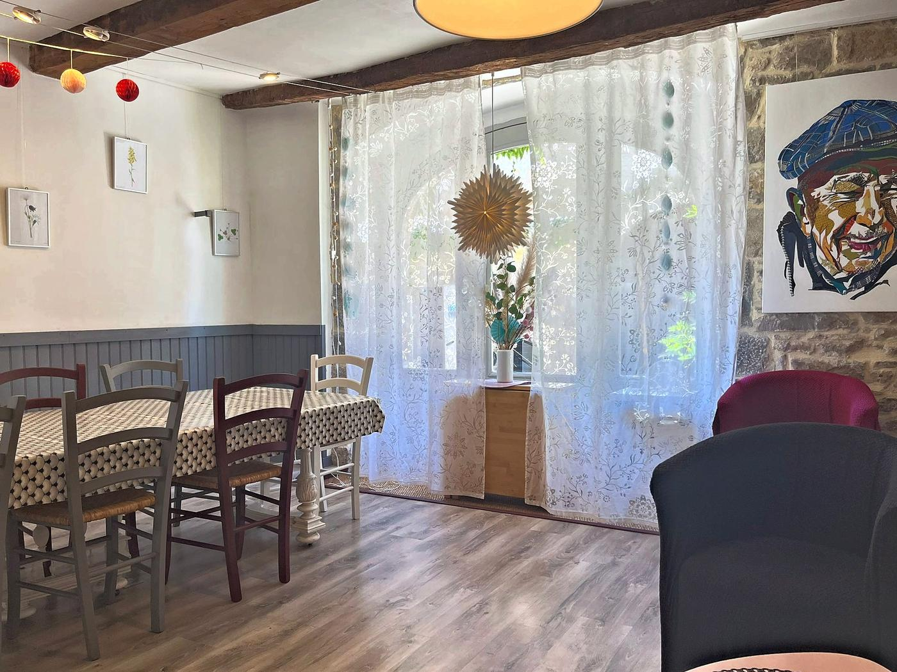
La Cuisine
C’est l’espace de rassemblement convivial pour vos repas en famille ou entre amis.
Cuisine-salle à manger du rez-de-chaussée, équipée pour quinze personnes.
Ce qui vous attend
Cuisine équipéeDimensionnée pour un groupe entier, elle contient tout ce qu’il faut : équipement, ustensiles, condiments…
Cuisine et salle à manger d’un seul tenantCelui qui cuisine reste avec les autres.
Au rez-de-chausséeÀ côté du salon et de l’accès au jardin (non attenant).
En formule chambres d’hôtesL’endroit où nous servons les petits déjeuners et les repas.
En quelques mots
La grande cuisine-salle à manger du rez-de-chaussée : complètement équipée pour quinze personnes.
Réponse sous 24 h · 100 % de taux de réponse sur Airbnb depuis huit ans · en direct, sans frais de service
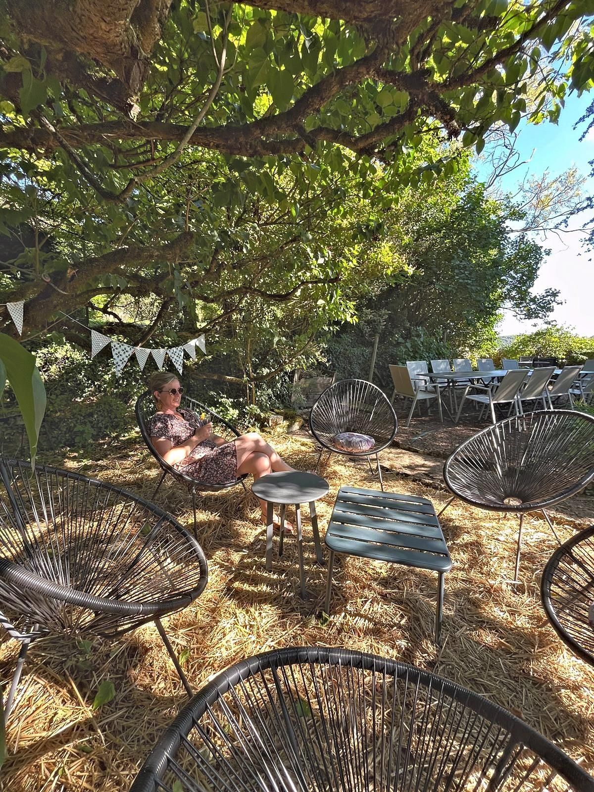
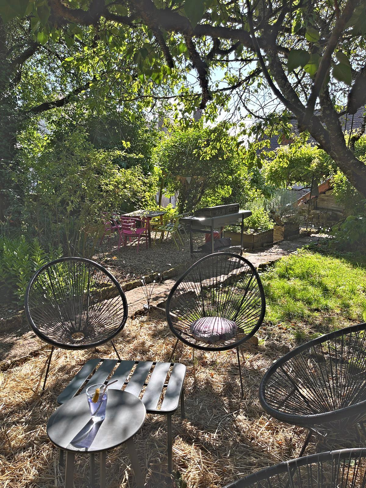
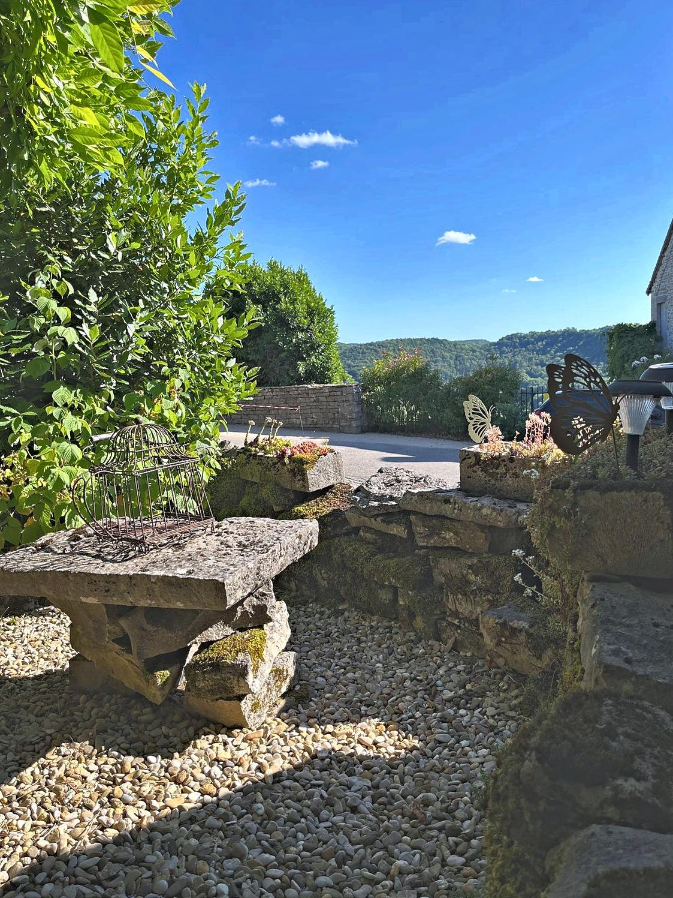
Le Jardin
Un coin de paradis, au calme et tout équipé pour passer de bons moments.
Clos, à l’abri des regards, non attenant.
Ce qui vous attend
Clos, à l’abri des regardsVous êtes en plein village et pourtant chez vous.
Le jardin des 5 sensPaille, copeaux de bois, cailloux, chanvre, arbres fruitiers : autant de coins différents dans un même jardin.
Équipé pour des moments détenteTransats, barbecue à gaz et plancha, tables et chaises, jeux pour enfants…
Vue sur la reculéeL’espace repas regarde la reculée de Baume-les-Messieurs.
En quelques mots
Notre jardin est l’endroit parfait pour se détendre, à l’abri des regards et tout équipé pour pouvoir profiter d’un écrin de verdure au cœur de Château-Chalon.
Réponse sous 24 h · 100 % de taux de réponse sur Airbnb depuis huit ans · en direct, sans frais de service
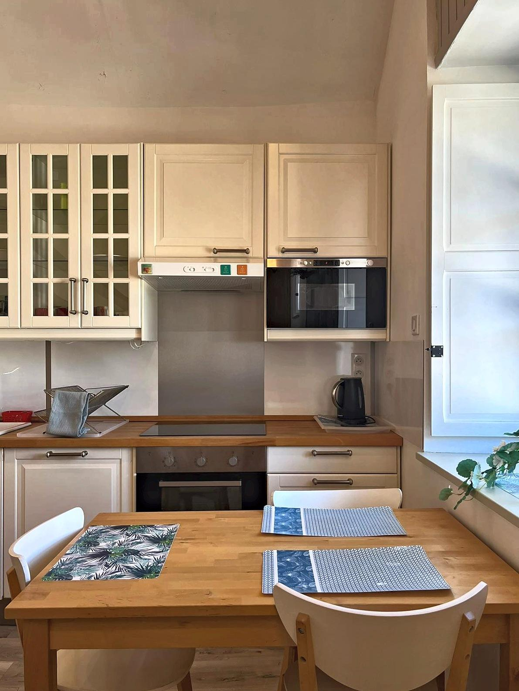
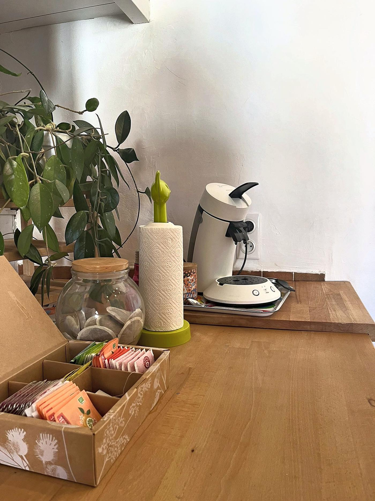
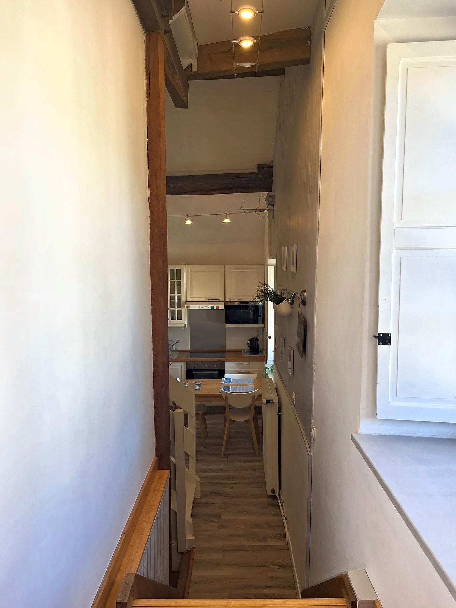
La Cuisine secondaire
Une cuisine supplémentaire pour accueillir tout le monde.
En demi-niveau : une seconde cuisine équipée, transformable en salle de jeux.
Ce qui vous attend
Une seconde cuisine, entièrement équipéePas un coin cuisine : une vraie cuisine d’appoint quand la maison est pleine.
En demi-niveauÀ l’écart de la grande cuisine : deux repas peuvent se préparer en même temps.
Salle de jeux quand il le fautLes enfants y prennent le pouvoir et la table du bas reste tranquille.
En quelques mots
En demi-niveau, une seconde cuisine entièrement équipée. Elle sert de cuisine d’appoint quand la maison est pleine, et se transforme en salle de jeux quand les enfants prennent le pouvoir.
C’est ce qui permet à quinze personnes de cohabiter sans se gêner au moment des repas.
Réponse sous 24 h · 100 % de taux de réponse sur Airbnb depuis huit ans · en direct, sans frais de service
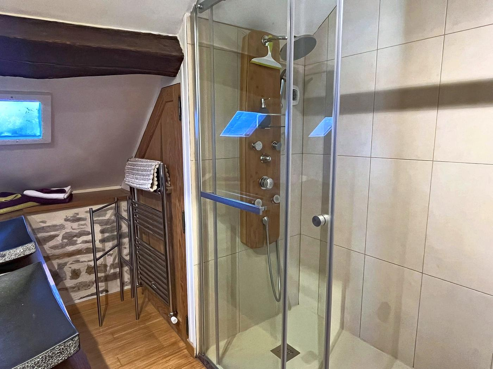
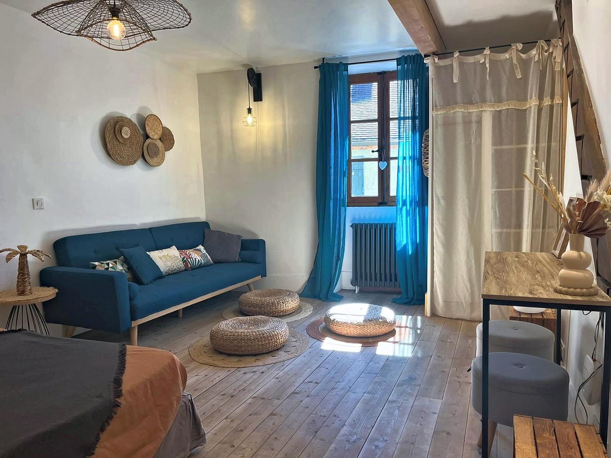
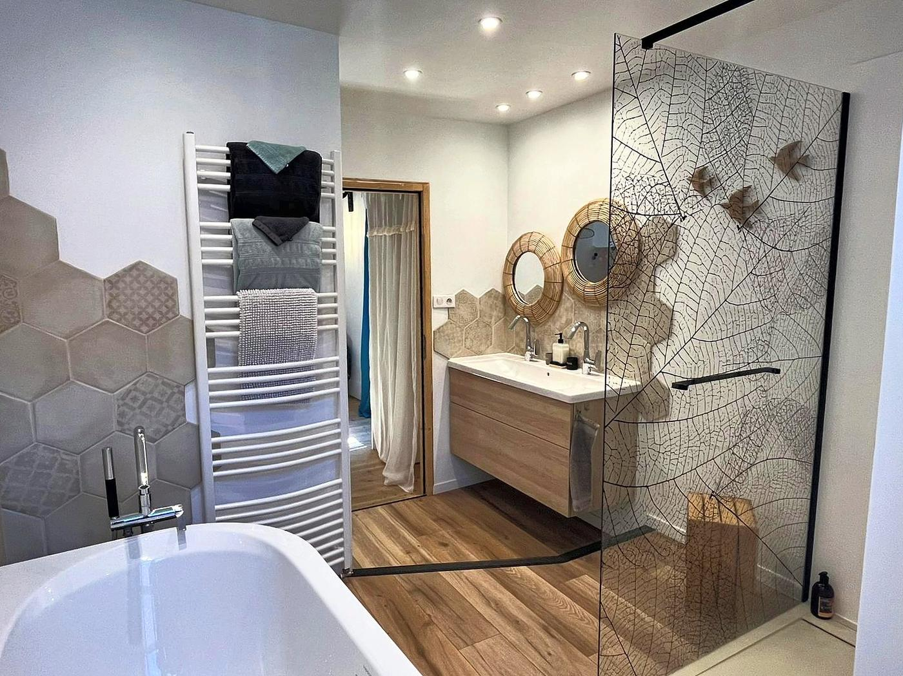
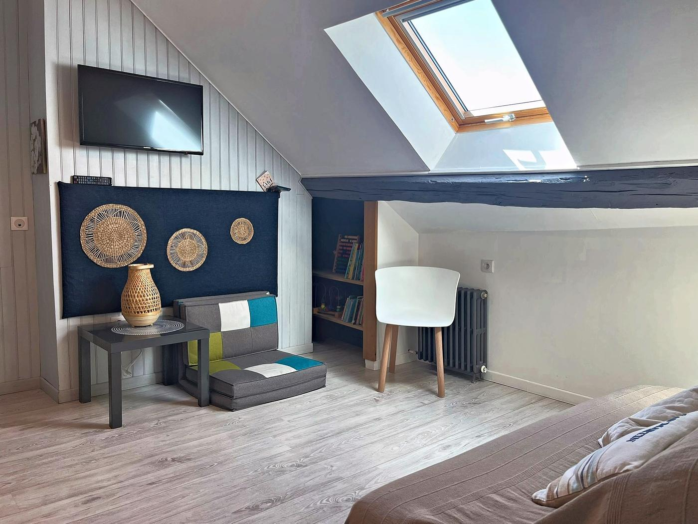
La maison entière
Toute la maison pour vous, et personne d’autre.
GÎTE 300 M² · JUSQU’À 15 PERSONNES·4,93/5 · 86 avis
Tarif sur demande
Ce qui vous attend
300 m² sur trois étages4 chambres et 1 suite familiale, deux cuisines, un salon avec cheminée, et le jardin clos.
Cinq salles de bain et cinq WC privésChacun sa chambre, chacun sa salle d’eau : c’est ce qui fait tenir un groupe de quinze ou différents hôtes.
Des lits qui s’adaptentLes lits simples se jumellent en lits doubles selon la composition du groupe. Trois lits bébé disponibles.
Un jardin closClos et à l’abri des regards, avec barbecue, plancha et vue sur la reculée de Baume-les-Messieurs.
La formule des retrouvaillesFamilles qui se réunissent, groupes d’amis : tout le monde se retrouve autour de la grande table.
La maison
Vous prenez la maison entière : les 300 m², les cinq chambres avec leur salle de bain et leur WC privés, les deux cuisines, le salon avec sa cheminée à insert, et le jardin clos.
C’est la formule des familles qui se retrouvent et des groupes d’amis : chacun a sa chambre et sa salle de bain, et tout le monde se retrouve autour de la grande table. Les lits simples se jumellent en lits doubles selon la composition du groupe.
Ce qu’en disent nos hôtes
« Charmante maison ancienne avec des chambres confortables et soigneusement rénovées et un accès au jardin »
« Maison très bien tenue, chambre décorée avec goût, cuisine à disposition et jardin bucolique »
« Petit déjeuner copieux et qu’avec des produits frais et faits maison »
Tarif sur demande Écrivez-nous, nous répondons sous 24 h
Compris dans le prix
Draps et linge de maison
En supplément
Petits déjeuners maison, sur demande
Ménage final
Taxe de séjour
Supplément chauffage d’octobre à mai
Informations pratiques
Arrivée : Entre 17 h et 19 h
Départ : 10 h
Animaux acceptés
Établissement non-fumeur
Parking public à quelques pas
Français, anglais
Réponse sous 24 h · 100 % de taux de réponse sur Airbnb depuis huit ans · en direct, sans frais de service
Chambre 1 — En Messepierre
Salle de bain avec douche balnéo et WC privés, dressing.
CHAMBRE · 27 M² · 2 PERSONNES·4,93/5 · 86 avis
à partir de 92 € par nuit
Ce qui vous attend
ÉquipementsLit queen size : 160 × 200, douche balnéo, double vasque, un bureau, draps en lin et serviettes en coton inclus, TV écran plat.
En formule chambres d’hôtesPetits déjeuners maison, draps et ménage compris.
Au cœur d’un des Plus Beaux Villages de FranceChâteau-Chalon, berceau du Vin Jaune.
4,93/5 sur 86 avisSuperhôte depuis huit ans, 100 % de taux de réponse.
La chambre
Vingt-sept mètres carrés avec sa salle de bain à double vasque, sa douche balnéo à jets massants et ses toilettes séparées. Un lit queen de 160 × 200 et un coin salon spacieux.
Deux dressings, un pour Madame et un pour Monsieur, et un bureau. Draps en lin, serviettes en coton bio et sèche-cheveux fournis.
Ce qu’en disent nos hôtes
« Un hébergement très confortable dans un bel emplacement. Nous avions une chambre confortable et spacieuse »
« Maison très bien tenue, chambre décorée avec goût, cuisine à disposition et jardin bucolique »
« Les chambres étaient bien agencées et conçues pour une famille comme la nôtre »
Réponse sous 24 h · 100 % de taux de réponse sur Airbnb depuis huit ans · en direct, sans frais de service
Chambre 2 — La Mercantine
La plus grande des chambres doubles, avec sa baignoire et son coin salon.
CHAMBRE · 36 M² · 2 PERSONNES·4,93/5 · 86 avis
à partir de 96 € par nuit
Ce qui vous attend
ÉquipementsLit queen 160 × 200, salle de bain indépendante avec baignoire et douche, toilettes séparées, draps en lin et serviettes en coton inclus, coin salon avec canapé.
En formule chambres d’hôtesPetits déjeuners maison, draps et ménage compris.
Au cœur d’un des Plus Beaux Villages de FranceChâteau-Chalon, berceau du Vin Jaune.
4,93/5 sur 86 avisSuperhôte depuis huit ans, 100 % de taux de réponse.
La chambre
Trente-six mètres carrés, la plus grande des chambres doubles. Salle de bain indépendante avec baignoire et douche, toilettes séparées, et un coin salon avec canapé.
Un lit queen de 160 × 200. Draps en lin, serviettes et sèche-cheveux fournis.
Ce qu’en disent nos hôtes
« Un hébergement très confortable dans un bel emplacement. Nous avions une chambre confortable et spacieuse »
« Maison très bien tenue, chambre décorée avec goût, cuisine à disposition et jardin bucolique »
« Les chambres étaient bien agencées et conçues pour une famille comme la nôtre »
Réponse sous 24 h · 100 % de taux de réponse sur Airbnb depuis huit ans · en direct, sans frais de service
Chambre 3 — Les Terrasses
Quatre espaces à vous seuls, pour six personnes.
SUITE · 54 M² · 6 PERSONNES·4,93/5 · 86 avis
à partir de 110 € par nuit
Ce qui vous attend
Quatre espacesUne chambre de 20 m² avec dressing, une mezzanine de 10 m², un salon privatif de 12 m² et une salle de bain de 10 m² avec baignoire, douche et toilettes séparées.
ÉquipementsDraps en lin et serviettes en coton inclus, TV écran plat et coin salon avec canapé.
Jusqu’à six personnesLit de 160 × 200 ou deux lits de 80 × 200 dans la chambre, lit de 180 × 190 ou deux lits de 90 × 190 en mezzanine, canapé BZ convertible de 160 × 200 au salon.
En formule chambres d’hôtesPetits déjeuners maison, draps et ménage compris.
La chambre
Cinquante-quatre mètres carrés en quatre espaces : une chambre de 20 m² avec dressing, une mezzanine de 10 m² accessible aux enfants de plus de six ans, une salle de bain de 10 m² avec baignoire, douche et toilettes séparées, et un salon privatif de 12 m².
Elle accueille six personnes. Le salon privatif a sa TV écran plat et son espace de jeux. Draps en lin, serviettes en coton bio et sèche-cheveux fournis.
Ce qu’en disent nos hôtes
« Un hébergement très confortable dans un bel emplacement. Nous avions une chambre confortable et spacieuse »
« Maison très bien tenue, chambre décorée avec goût, cuisine à disposition et jardin bucolique »
« Les chambres étaient bien agencées et conçues pour une famille comme la nôtre »
Réponse sous 24 h · 100 % de taux de réponse sur Airbnb depuis huit ans · en direct, sans frais de service
Chambre 4 — Le Colombier
Salle de douche indépendante, WC séparé et son petit coin salon.
CHAMBRE · 17 M² · 2 PERSONNES·4,93/5 · 86 avis
à partir de 82 € par nuit
Ce qui vous attend
ÉquipementsLit double 140 × 190, salle de douche indépendante, WC séparé, draps en lin et serviettes en coton inclus, commode et console pour votre ordinateur, TV écran plat.
En formule chambres d’hôtesPetits déjeuners maison, draps et ménage compris.
Au cœur d’un des Plus Beaux Villages de FranceChâteau-Chalon, berceau du Vin Jaune.
4,93/5 sur 86 avisSuperhôte depuis huit ans, 100 % de taux de réponse.
La chambre
Dix-sept mètres carrés avec sa salle de douche indépendante et son WC séparé. Un lit double de 140 × 190, une TV écran plat, une commode et une console pour poser votre ordinateur.
En été, elle est équipée d’un rafraîchisseur d’ambiance. Draps en lin, serviettes en coton bio et sèche-cheveux fournis.
Ce qu’en disent nos hôtes
« Un hébergement très confortable dans un bel emplacement. Nous avions une chambre confortable et spacieuse »
« Maison très bien tenue, chambre décorée avec goût, cuisine à disposition et jardin bucolique »
« Les chambres étaient bien agencées et conçues pour une famille comme la nôtre »
Réponse sous 24 h · 100 % de taux de réponse sur Airbnb depuis huit ans · en direct, sans frais de service
Chambre 5 — Le Chanaie
Modulable : deux lits une place, ou un grand lit double de 160.
CHAMBRE · 20 M² · 2 PERSONNES·4,93/5 · 86 avis
à partir de 82 € par nuit
Ce qui vous attend
ÉquipementsDeux lits une place ou un grand lit double de 160, salle de douche indépendante, WC séparé, petit coin salon, dressing avec penderie.
En formule chambres d’hôtesPetits déjeuners maison, draps et ménage compris.
Au cœur d’un des Plus Beaux Villages de FranceChâteau-Chalon, berceau du Vin Jaune.
4,93/5 sur 86 avisSuperhôte depuis huit ans, 100 % de taux de réponse.
La chambre
Vingt mètres carrés modulables : deux lits une place, ou un grand lit double de 160 selon qui vous êtes. Salle de douche indépendante, WC séparé, petit coin salon et dressing avec penderie.
Un troisième lit adulte ou un lit enfant peut être ajouté sur demande. Draps en lin, serviettes en coton bio et sèche-cheveux fournis.
Ce qu’en disent nos hôtes
« Un hébergement très confortable dans un bel emplacement. Nous avions une chambre confortable et spacieuse »
« Maison très bien tenue, chambre décorée avec goût, cuisine à disposition et jardin bucolique »
« Les chambres étaient bien agencées et conçues pour une famille comme la nôtre »
Réponse sous 24 h · 100 % de taux de réponse sur Airbnb depuis huit ans · en direct, sans frais de service
Petits déjeuners maison
Servis dans la cuisine-salle à manger, à l’heure que vous choisissez.
Toute l’annéeDurée : durée à confirmerNiveau : niveau à confirmer
Ce qui vous attend
Compris dans la formule chambres d’hôtesCe n’est pas une option à cocher : c’est dans le prix de la chambre.
Vous choisissez l’heure la veilleLa table est dressée pour quand vous descendez.
« Que des produits frais et faits maison »Les mots de Sylvette dans son avis : confitures, pain frais et gâteaux maison.
En quelques mots
Ils sont servis dans la cuisine-salle à manger du rez-de-chaussée, autour de la grande table.
« Petit déjeuner copieux et qu’avec des produits frais et faits maison » : c’est ce que Sylvette a écrit, et c’est le compliment qui revient le plus souvent. Inclus dans la formule chambres d’hôtes.
Comment ça se passe
Vous nous dites la veille à quelle heure vous voulez descendre
La table est dressée dans la cuisine-salle à manger
Confitures, pain frais et gâteaux maison, servis par vos hôtes
Compris dans la prestation
Compris dans la formule chambres d’hôtes
Tarif
tarif à confirmer — dites-nous vos dates et le nombre de personnes, nous vous répondons avec un prix ferme.
Réponse sous 24 h · 100 % de taux de réponse sur Airbnb depuis huit ans · en direct, sans frais de service
Randonnée avec ânes de bât
Vous marchez les mains libres : ce sont les ânes qui portent.
ÉtéDurée : Demi-journée (3 h minimum) ou journée, départs à 9 h et 14 hNiveau : Accessible aux familles, aucune expérience nécessaire
Ce qui vous attend
Cactus, Vladi et UlanTrois ânes de bât. Ils portent les sacs, les pique-niques, et parfois les plus petits.
En liberté, à votre rythmeOn vous confie l’âne après le bâtage. Le sentier est à vous : vous marchez à votre allure et vous vous arrêtez où vous voulez.
Aucune expérience nécessaireUn âne de bât se mène au pas, il connaît le chemin mieux que vous.
Les enfants adoptent le leur en dix minutesC’est la prestation qui transforme un séjour en souvenir d’enfance.
En quelques mots
Ils s’appellent Cactus, Vladi et Ulan. Ce sont eux qui portent les sacs, les pique-niques et parfois les plus petits — vous, vous marchez les mains libres et vous regardez le paysage.
Vous partez en liberté : on vous montre le bâtage, on vous confie l’âne, et le sentier est à vous. Des chemins balisés au départ de Château-Chalon, avec des vues sur la vallée. C’est la prestation qui transforme un séjour en souvenir d’enfance : les enfants adoptent leur âne dans les dix premières minutes.
Aucune expérience n’est nécessaire. Un âne de bât se mène au pas, il connaît le chemin mieux que vous, et il s’arrête volontiers pour brouter.
Comment ça se passe
Réservation 48 h à l’avance au minimum
Rendez-vous à T’Nature, 1 rue de l’Église, à 9 h ou à 14 h
Présentation des ânes et du bâtage, puis on charge les sacs et le pique-nique
Vous partez seuls sur un sentier balisé, à votre rythme
Pause déjeuner en chemin, avec vue sur la vallée
Retour à T’Nature, et on débâte ensemble
Compris dans la prestation
Les ânes et leur bâtage
La prise en main avant le départ
Tarif
De 40 € (un âne, demi-journée) à 150 € (trois ânes, journée) — dites-nous vos dates et le nombre de personnes, nous vous répondons avec un prix ferme.
Réponse sous 24 h · 100 % de taux de réponse sur Airbnb depuis huit ans · en direct, sans frais de service
Randonnée en raquettes
Le massif sous la neige, avec un professionnel qui le connaît.
HiverDurée : À la journée ou à la demi-journéeNiveau : De débutant à confirmé
Ce qui vous attend
Un guide de moyenne montagneVous partez accompagnés par un professionnel : c’est lui qui connaît le massif, l’état de la neige et l’itinéraire du jour.
Dans le Haut-JuraOn monte sur le massif, là où la neige tient : les plateaux d’altitude, les forêts et les combes silencieuses.
Aucune expérience nécessaireLa raquette se marche au pas. Si vous savez marcher une demi-journée, vous savez marcher en raquettes.
Le matériel est fourniRaquettes et bâtons compris : vous venez avec de bonnes chaussures et de quoi vous couvrir.
En quelques mots
L’hiver, le Jura devient un autre pays : les plateaux d’altitude sous la neige, les forêts silencieuses, et des traces d’animaux partout dans la poudreuse.
La sortie se fait dans le Haut-Jura, accompagnée par un guide de moyenne montagne. C’est lui qui choisit l’itinéraire selon la neige et la météo du jour, et qui vous raconte le massif en chemin.
Aucune expérience n’est nécessaire : la raquette se marche au pas, et le rythme s’adapte au groupe.
Comment ça se passe
Vous nous dites vos dates et le nombre de personnes
Nous calons la sortie avec le guide de moyenne montagne
Point météo et choix de l’itinéraire du jour par le guide
Sortie accompagnée dans le Haut-Jura, au rythme du groupe
Retour à la maison, devant la cheminée
Compris dans la prestation
Les raquettes et les bâtons
L’accompagnement par un guide de moyenne montagne
L’organisation et la réservation
Tarif
Sur demande — dites-nous vos dates et le nombre de personnes, nous vous répondons avec un prix ferme.
Réponse sous 24 h · 100 % de taux de réponse sur Airbnb depuis huit ans · en direct, sans frais de service
Autres prestations sur demande
Un réseau tissé depuis 2016, que l’on ouvre pour vous.
Toute l’annéeDurée : durée à confirmerNiveau : niveau à confirmer
Ce qui vous attend
Des caves qui ne reçoivent que sur rendez-vousChâteau-Chalon est une appellation minuscule et très demandée. Nous travaillons avec ses vignerons depuis 2016.
Des artisans qu’on ne trouve pas dans un guideDes gens qui font des choses avec leurs mains, à quelques kilomètres d’ici, et qui ouvrent leur atelier parce que nous les connaissons.
Des pêcheurs professionnels, pas des animateursDes gens qui vivent de la rivière et qui acceptent de vous emmener.
Monté sur mesure, prix ferme avant de vous engagerVous dites vos dates et ce qui vous attire ; nous revenons vers vous avec ce qui est possible.
En quelques mots
Depuis que nous avons repris la maison en 2016, nous avons construit un réseau : vignerons de Château-Chalon, pêcheurs professionnels, artisans. Ces prestations ne sont pas au catalogue, elles se montent au cas par cas selon vos dates et selon qui est disponible.
Dites-nous ce qui vous attire, nous regardons ce qui est possible.
Comment ça se passe
Vous nous dites ce qui vous intéresse et vos dates
Nous sollicitons le partenaire correspondant dans notre réseau
Nous vous confirmons ce qui est possible, avec un prix ferme
Les trois prestations
Escapades œnologiquesToute l’année
Des caves de Château-Chalon que l’on ne visite pas sans être introduit.
Château-Chalon est une appellation minuscule et très demandée. Certains domaines ne reçoivent que sur rendez-vous, et rarement les visiteurs de passage.
Nous travaillons avec les vignerons du village et du vignoble jurassien depuis 2016 : nous organisons la visite, la dégustation et parfois le repas qui va avec. Vous repartez en ayant compris ce que le voile de levures fait au savagnin — et avec quelques bouteilles.
On cale ensemble vos envies et le nombre de personnes
Nous prenons rendez-vous chez un ou plusieurs vignerons partenaires
Visite de cave et dégustation commentée par le vigneron
Retour à pied à la maison si le domaine est dans le village
Pêche avec un professionnelToute l’année
Une matinée en rivière avec un pêcheur professionnel du réseau de la maison.
Parmi les partenaires que nous avons rassemblés depuis 2016, il y a des pêcheurs professionnels. Ce ne sont pas des animateurs : ce sont des gens qui vivent de la rivière et qui acceptent de vous emmener.
C’est l’une de ces « escapades originales et insolites » que nous montons à la demande. Dites-nous que ça vous intéresse et nous regardons ce qui est possible sur vos dates.
Vous nous dites vos dates et votre niveau
Nous contactons le pêcheur professionnel du réseau
Sortie encadrée sur la rivière, matériel et technique expliqués
Rencontres d’artisansToute l’année
Les ateliers du coin, ouverts parce que nous les connaissons depuis dix ans.
Depuis que nous avons repris la maison en 2016, nous avons construit un réseau : vignerons, pêcheurs, et artisans. Des gens qui font des choses avec leurs mains, à quelques kilomètres d’ici.
Ces rencontres se montent au cas par cas, selon qui est disponible et ce qui vous intéresse. C’est le genre de chose qu’on ne trouve pas dans un guide.
On échange sur ce qui vous attire : bois, métal, terre, textile
Nous sollicitons l’artisan correspondant dans notre réseau
Visite d’atelier, démonstration, échange direct
Compris dans la prestation
Mise en relation avec nos partenaires
Organisation et réservation
Tarif
tarif à confirmer — dites-nous vos dates et le nombre de personnes, nous vous répondons avec un prix ferme.
Réponse sous 24 h · 100 % de taux de réponse sur Airbnb depuis huit ans · en direct, sans frais de service
Galerie photo — T’Nature, Château-Chalon
Vins & Caveaux — vue d’ensemble
Les vignes de Château-Chalon en fin de journée, le village perché en arrière-plan — panoramique16:6 · panoramique · 2800×1050 px
Un clavelin de vin jaune et deux verres posés sur un fût16:6 · panoramique · 2800×1050 px
Vendanges : mains et sécateur dans les rangs de savagnin16:6 · panoramique · 2800×1050 px
La Route des Vins : plan large sur le vignoble en coteau16:6 · panoramique · 2800×1050 px
Dégustation en cave : le vigneron verse à la pipette16:6 · panoramique · 2800×1050 px
Domaine MacleChâteau-Chalon · à pied
Le caveau de Domaine Macle : fûts, verres et pierre — éclairage chaud4:3 · paysage · 1600×1200 px
Les vignes ou la façade du domaine Domaine Macle, à Château-Chalon4:3 · paysage · 1600×1200 px
Le nom qui a fait la légende du Château-Chalon, à deux pas de votre chambre. Prenez rendez-vous, les places sont rares.
Domaine Berthet-BondetChâteau-Chalon · à pied
Le caveau de Domaine Berthet-Bondet : fûts, verres et pierre — éclairage chaud4:3 · paysage · 1600×1200 px
Les vignes ou la façade du domaine Domaine Berthet-Bondet, à Château-Chalon4:3 · paysage · 1600×1200 px
Caves voûtées, savagnin sous voile : la dégustation qui vous fera enfin comprendre le Vin Jaune.
Fruitière Vinicole de VoiteurVoiteur · 3 km · 5 min
Le caveau de Fruitière Vinicole de Voiteur : fûts, verres et pierre — éclairage chaud4:3 · paysage · 1600×1200 px
Les vignes ou la façade du domaine Fruitière Vinicole de Voiteur, à Voiteur4:3 · paysage · 1600×1200 px
La coopérative du village voisin : le meilleur endroit pour goûter côte à côte les cinq cépages du Jura.
Domaine Baud Génération 9Le Vernois · 12 km · 15 min
Le caveau de Domaine Baud Génération 9 : fûts, verres et pierre — éclairage chaud4:3 · paysage · 1600×1200 px
Les vignes ou la façade du domaine Domaine Baud Génération 9, à Le Vernois4:3 · paysage · 1600×1200 px
Neuf générations de vignerons, un caveau lumineux et des crémants qui font mentir tous les préjugés.
Caveau des ByardsLe Vernois · 12 km · 15 min
Le caveau de Caveau des Byards : fûts, verres et pierre — éclairage chaud4:3 · paysage · 1600×1200 px
Les vignes ou la façade du domaine Caveau des Byards, à Le Vernois4:3 · paysage · 1600×1200 px
Petite coopérative accueillante et tarifs doux : l’arrêt malin pour remplir le coffre avant de rentrer.
Domaine Jean BourdyArlay · 15 km · 20 min
Le caveau de Domaine Jean Bourdy : fûts, verres et pierre — éclairage chaud4:3 · paysage · 1600×1200 px
Les vignes ou la façade du domaine Domaine Jean Bourdy, à Arlay4:3 · paysage · 1600×1200 px
Une cave où dorment des bouteilles du XIXᵉ siècle. Ici, on parle du vin en siècles, pas en millésimes.
Domaine du Château d’ArlayArlay · 15 km · 20 min
Le caveau de Domaine du Château d’Arlay : fûts, verres et pierre — éclairage chaud4:3 · paysage · 1600×1200 px
Les vignes ou la façade du domaine Domaine du Château d’Arlay, à Arlay4:3 · paysage · 1600×1200 px
Dégustation dans les communs d’un château, puis promenade dans son parc classé : deux visites en une.
Fruitière Vinicole d’Arbois — Château BéthanieArbois · 27 km · 30 min
Le caveau de Fruitière Vinicole d’Arbois — Château Béthanie : fûts, verres et pierre — éclairage chaud4:3 · paysage · 1600×1200 px
Les vignes ou la façade du domaine Fruitière Vinicole d’Arbois — Château Béthanie, à Arbois4:3 · paysage · 1600×1200 px
La plus ancienne coopérative viticole de France, au cœur de la capitale des vins du Jura.
Domaine Rolet Père & FilsArbois · 27 km · 30 min
Le caveau de Domaine Rolet Père & Fils : fûts, verres et pierre — éclairage chaud4:3 · paysage · 1600×1200 px
Les vignes ou la façade du domaine Domaine Rolet Père & Fils, à Arbois4:3 · paysage · 1600×1200 px
Une maison de référence sur les quatre appellations du Jura : la dégustation la plus complète du secteur.
Domaine de la TournelleArbois · 27 km · 30 min
Le caveau de Domaine de la Tournelle : fûts, verres et pierre — éclairage chaud4:3 · paysage · 1600×1200 px
Les vignes ou la façade du domaine Domaine de la Tournelle, à Arbois4:3 · paysage · 1600×1200 px
Vins nature, cave en centre-ville et guinguette au bord de la Cuisance : on y passe l’après-midi.
Musée de la Vigne et du Vin — Château PécauldArbois · 27 km · 30 min
Le caveau de Musée de la Vigne et du Vin — Château Pécauld : fûts, verres et pierre — éclairage chaud4:3 · paysage · 1600×1200 px
Les vignes ou la façade du domaine Musée de la Vigne et du Vin — Château Pécauld, à Arbois4:3 · paysage · 1600×1200 px
À faire avant les dégustations : une heure ici et le vignoble jurassien devient enfin lisible.
Pupillin, capitale mondiale du PloussardPupillin · 29 km · 35 min
Le caveau de Pupillin, capitale mondiale du Ploussard : fûts, verres et pierre — éclairage chaud4:3 · paysage · 1600×1200 px
Les vignes ou la façade du domaine Pupillin, capitale mondiale du Ploussard, à Pupillin4:3 · paysage · 1600×1200 px
Un hameau de trois rues et une douzaine de vignerons. Le rouge léger et poivré du Jura est né ici.
La Percée du Vin Jauneédition 2027 à Arlay · 15 km · 20 min
Le caveau de La Percée du Vin Jaune : fûts, verres et pierre — éclairage chaud4:3 · paysage · 1600×1200 px
Les vignes ou la façade du domaine La Percée du Vin Jaune, à édition 2027 à Arlay4:3 · paysage · 1600×1200 px
Premier week-end de février : le vignoble entier ouvre ses caves. Réservez votre chambre très en avance.
Route des Vins du JuraChâteau-Chalon est sur l’itinéraire · sur place
Le caveau de Route des Vins du Jura : fûts, verres et pierre — éclairage chaud4:3 · paysage · 1600×1200 px
Les vignes ou la façade du domaine Route des Vins du Jura, à Château-Chalon est sur l’itinéraire4:3 · paysage · 1600×1200 px
Quatre-vingts kilomètres de vignoble entre Salins et Saint-Amour, et vous dormez au milieu.
Vins & Caveaux
Château-Chalon est sur la Route des Vins du Jura, et son nom est une appellation à lui seul. Deux domaines sont à moins de cinq minutes à pied de votre chambre.
Les adresses, de la plus proche à la plus lointaine
Cliquez sur un lieu pour voir ses photos.
Temps de route14 lieux
Château-Chalon·à pied
Le nom qui a fait la légende du Château-Chalon, à deux pas de votre chambre. Prenez rendez-vous, les places sont rares.
Réponse sous 24 h · 100 % de taux de réponse sur Airbnb depuis huit ans · en direct, sans frais de service
Restaurants — vue d’ensemble
Meules de Comté empilées dans une cave d’affinage — panoramique16:6 · panoramique · 2800×1050 px
Une table dressée avec assiette de Comté, saucisse de Morteau et verre de vin jaune16:6 · panoramique · 2800×1050 px
Poulet au vin jaune et morilles servi en assiette, plan serré16:6 · panoramique · 2800×1050 px
Terrasse de restaurant au pied des falaises, en fin de journée16:6 · panoramique · 2800×1050 px
Vitrine de fruitière : les fromages du Jura alignés16:6 · panoramique · 2800×1050 px
Marché local : étal de produits du terroir jurassien16:6 · panoramique · 2800×1050 px
Le Bouchon du ChâteauChâteau-Chalon · à pied
Le Bouchon du Château : la salle, la terrasse ou la devanture4:3 · paysage · 1600×1200 px
Une assiette ou un produit signature de Le Bouchon du Château4:3 · paysage · 1600×1200 px
Le restaurant du village, cuisine du terroir et belle carte de vins locaux. Réservez, la salle est petite.
Fruitière des Coteaux de SeilleLavigny · 6 km · 10 min
Fruitière des Coteaux de Seille : la salle, la terrasse ou la devanture4:3 · paysage · 1600×1200 px
Une assiette ou un produit signature de Fruitière des Coteaux de Seille4:3 · paysage · 1600×1200 px
La fromagerie la plus proche : des Comtés de plusieurs affinages à goûter avant de choisir.
Le Grand JardinBaume-les-Messieurs · 10 km · 15 min
Le Grand Jardin : la salle, la terrasse ou la devanture4:3 · paysage · 1600×1200 px
Une assiette ou un produit signature de Le Grand Jardin4:3 · paysage · 1600×1200 px
Terrasse au pied des falaises de la reculée. À combiner avec la visite de l’abbaye le même jour.
Fruitière Les Délices du PlateauPlasne · 18 km · 25 min
Fruitière Les Délices du Plateau : la salle, la terrasse ou la devanture4:3 · paysage · 1600×1200 px
Une assiette ou un produit signature de Fruitière Les Délices du Plateau4:3 · paysage · 1600×1200 px
Une petite fruitière de plateau, sans vitrine ni marketing. C’est exactement pour ça qu’on y va.
Brasserie-Distillerie La Rouget de LisleBletterans · 20 km · 25 min
Brasserie-Distillerie La Rouget de Lisle : la salle, la terrasse ou la devanture4:3 · paysage · 1600×1200 px
Une assiette ou un produit signature de Brasserie-Distillerie La Rouget de Lisle4:3 · paysage · 1600×1200 px
Bières artisanales et whisky jurassien vieilli en fût de vin jaune. La visite se termine bien.
Maison du ComtéPoligny · 22 km · 25 min
Maison du Comté : la salle, la terrasse ou la devanture4:3 · paysage · 1600×1200 px
Une assiette ou un produit signature de Maison du Comté4:3 · paysage · 1600×1200 px
Dans la capitale du Comté : parcours de dégustation, et on repart en sachant enfin lire une meule.
Le BistronômeArbois · 27 km · 30 min
Le Bistronôme : la salle, la terrasse ou la devanture4:3 · paysage · 1600×1200 px
Une assiette ou un produit signature de Le Bistronôme4:3 · paysage · 1600×1200 px
Bib Gourmand Michelin 2026 : la meilleure adresse d’Arbois au rapport qualité-prix. Réservez tôt.
Les CaudaliesArbois · 27 km · 30 min
Les Caudalies : la salle, la terrasse ou la devanture4:3 · paysage · 1600×1200 px
Une assiette ou un produit signature de Les Caudalies4:3 · paysage · 1600×1200 px
Cuisine soignée et accords mets-vins du Jura, dans une jolie maison de ville arboisienne.
Le Bistrot de la TournelleArbois · 27 km · 30 min
Le Bistrot de la Tournelle : la salle, la terrasse ou la devanture4:3 · paysage · 1600×1200 px
Une assiette ou un produit signature de Le Bistrot de la Tournelle4:3 · paysage · 1600×1200 px
Guinguette au bord de la rivière, ouverte l’été seulement. Assiettes simples, vins nature, ombre des arbres.
La Table du GrapiotPupillin · 29 km · 35 min
La Table du Grapiot : la salle, la terrasse ou la devanture4:3 · paysage · 1600×1200 px
Une assiette ou un produit signature de La Table du Grapiot4:3 · paysage · 1600×1200 px
Une étoile Michelin 2026 au milieu des vignes de Pupillin. Le grand repas du séjour, à réserver longtemps avant.
ThermaSalinaSalins-les-Bains · 40 km · 45 min
ThermaSalina : la salle, la terrasse ou la devanture4:3 · paysage · 1600×1200 px
Une assiette ou un produit signature de ThermaSalina4:3 · paysage · 1600×1200 px
Bains d’eau salée et hammam au pied des fortifications. La bonne idée du jour de pluie ou du lendemain de rando.
Maison Jeunet — Château de GermigneyPort-Lesney · 45 km · 50 min
Maison Jeunet — Château de Germigney : la salle, la terrasse ou la devanture4:3 · paysage · 1600×1200 px
Une assiette ou un produit signature de Maison Jeunet — Château de Germigney4:3 · paysage · 1600×1200 px
La maison Jeunet a quitté Arbois pour Port-Lesney. Grande cuisine dans un parc au bord de la Loue.
Château du Mont JolySampans · 60 km · 1 h
Château du Mont Joly : la salle, la terrasse ou la devanture4:3 · paysage · 1600×1200 px
Une assiette ou un produit signature de Château du Mont Joly4:3 · paysage · 1600×1200 px
Une étoile Michelin aux portes de Dole, dans une demeure du XVIIIᵉ. Pour une occasion.
Fort des Rousses — caves d’affinage JurafloreLes Rousses · 90 km · 1 h 30
Fort des Rousses — caves d’affinage Juraflore : la salle, la terrasse ou la devanture4:3 · paysage · 1600×1200 px
Une assiette ou un produit signature de Fort des Rousses — caves d’affinage Juraflore4:3 · paysage · 1600×1200 px
Cent mille meules de Comté affinées dans un fort militaire enterré. Une visite qu’on n’oublie pas.
Restaurants
Un restaurant dans le village, deux fruitières à Comté à moins de vingt-cinq minutes, et une étoile Michelin à Pupillin. Nous réservons pour vous si vous le souhaitez.
Les adresses, de la plus proche à la plus lointaine
Cliquez sur un lieu pour voir ses photos.
Temps de route14 lieux
Château-Chalon·à pied
Le restaurant du village, cuisine du terroir et belle carte de vins locaux. Réservez, la salle est petite.
Réponse sous 24 h · 100 % de taux de réponse sur Airbnb depuis huit ans · en direct, sans frais de service
Randonnées — vue d’ensemble
Sentier dans les vignes au départ du village, balisage visible — panoramique16:6 · panoramique · 2800×1050 px
Marcheurs de dos sur un plateau du Haut-Jura16:6 · panoramique · 2800×1050 px
La forêt de la Joux, sapins et route forestière16:6 · panoramique · 2800×1050 px
Gorges de la Langouette vues de la passerelle16:6 · panoramique · 2800×1050 px
Le Cirque du Fer à Cheval depuis le belvédère — panoramique16:6 · panoramique · 2800×1050 px
Chaussures de rando et carte posées sur un mur de pierre sèche16:6 · panoramique · 2800×1050 px
Sentier « Le Vignoble du Château-Chalon »Ménétru-le-Vignoble · départ à 3 km
La vue caractéristique du parcours Sentier « Le Vignoble du Château-Chalon »4:3 · paysage · 1600×1200 px
Le sentier de Sentier « Le Vignoble du Château-Chalon » : balisage, chemin, ambiance de sous-bois4:3 · paysage · 1600×1200 px
La boucle à faire en arrivant : les vignes, les murgers de pierre sèche et la vue sur le village perché.
Balade patrimoine de Château-ChalonChâteau-Chalon · sur place
La vue caractéristique du parcours Balade patrimoine de Château-Chalon4:3 · paysage · 1600×1200 px
Le sentier de Balade patrimoine de Château-Chalon : balisage, chemin, ambiance de sous-bois4:3 · paysage · 1600×1200 px
Une heure dans les ruelles, l’église et les belvédères, sans jamais reprendre la voiture.
Boucle de la reculée de Baume-les-MessieursBaume-les-Messieurs · 10 km · 15 min
La vue caractéristique du parcours Boucle de la reculée de Baume-les-Messieurs4:3 · paysage · 1600×1200 px
Le sentier de Boucle de la reculée de Baume-les-Messieurs : balisage, chemin, ambiance de sous-bois4:3 · paysage · 1600×1200 px
On descend par les Roches de Baume, on remonte par l’abbaye : la plus belle demi-journée de marche du coin.
Sentier des Maîtres des ForgesSellières · 22 km · 25 min
La vue caractéristique du parcours Sentier des Maîtres des Forges4:3 · paysage · 1600×1200 px
Le sentier de Sentier des Maîtres des Forges : balisage, chemin, ambiance de sous-bois4:3 · paysage · 1600×1200 px
Un parcours facile sur les traces des forges d’autrefois, idéal quand la météo hésite.
L’Échappée Jurassienneitinéraire départemental · tracé local
La vue caractéristique du parcours L’Échappée Jurassienne4:3 · paysage · 1600×1200 px
Le sentier de L’Échappée Jurassienne : balisage, chemin, ambiance de sous-bois4:3 · paysage · 1600×1200 px
Trois cents kilomètres du vignoble au Haut-Jura. Nous pouvons vous aider à découper une étape au départ d’ici.
Cirque du Fer à ChevalBonlieu · 40 km · 45 min
La vue caractéristique du parcours Cirque du Fer à Cheval4:3 · paysage · 1600×1200 px
Le sentier de Cirque du Fer à Cheval : balisage, chemin, ambiance de sous-bois4:3 · paysage · 1600×1200 px
Une heure de montée en forêt pour un belvédère qui s’ouvre brutalement sur le cirque. Effort largement payé.
Gorges et cascades de la LangouetteLes Planches-en-Montagne · 45 km · 55 min
La vue caractéristique du parcours Gorges et cascades de la Langouette4:3 · paysage · 1600×1200 px
Le sentier de Gorges et cascades de la Langouette : balisage, chemin, ambiance de sous-bois4:3 · paysage · 1600×1200 px
Des gorges étroites de cinquante mètres de profondeur, franchies par une passerelle. Impressionnant et court.
Forêt de la Joux et Route des SapinsSupt / Levier · 45 km · 50 min
La vue caractéristique du parcours Forêt de la Joux et Route des Sapins4:3 · paysage · 1600×1200 px
Le sentier de Forêt de la Joux et Route des Sapins : balisage, chemin, ambiance de sous-bois4:3 · paysage · 1600×1200 px
L’une des plus belles sapinières d’Europe. On y roule au pas, on s’arrête, on marche un peu, on respire.
Grande Traversée du Juramassif · accès 45 min
La vue caractéristique du parcours Grande Traversée du Jura4:3 · paysage · 1600×1200 px
Le sentier de Grande Traversée du Jura : balisage, chemin, ambiance de sous-bois4:3 · paysage · 1600×1200 px
Le grand itinéraire du massif : à pied, en VTT, ou à ski de fond dès que la neige tient.
Parc naturel régional du Haut-JuraLajoux · 50 min
La vue caractéristique du parcours Parc naturel régional du Haut-Jura4:3 · paysage · 1600×1200 px
Le sentier de Parc naturel régional du Haut-Jura : balisage, chemin, ambiance de sous-bois4:3 · paysage · 1600×1200 px
Le portail rando du parc : des centaines de traces balisées, filtrables par durée et par difficulté.
Via ferrata de la Roche au DadeMorez · 70 km · 1 h 15
La vue caractéristique du parcours Via ferrata de la Roche au Dade4:3 · paysage · 1600×1200 px
Le sentier de Via ferrata de la Roche au Dade : balisage, chemin, ambiance de sous-bois4:3 · paysage · 1600×1200 px
Câbles et échelons au-dessus de la vallée. Accessible aux débutants encadrés, sensations garanties.
Site nordique des Moussières — Hautes-CombesLes Moussières · 75 km · 1 h 20
La vue caractéristique du parcours Site nordique des Moussières — Hautes-Combes4:3 · paysage · 1600×1200 px
Le sentier de Site nordique des Moussières — Hautes-Combes : balisage, chemin, ambiance de sous-bois4:3 · paysage · 1600×1200 px
Le ski de fond comme on l’imagine : grands plateaux, fermes isolées et silence.
Station des RoussesLes Rousses · 90 km · 1 h 30
La vue caractéristique du parcours Station des Rousses4:3 · paysage · 1600×1200 px
Le sentier de Station des Rousses : balisage, chemin, ambiance de sous-bois4:3 · paysage · 1600×1200 px
Alpin, nordique, raquettes ou VTT selon la saison. La grosse journée montagne, à prévoir au réveil.
Randonnées
Deux itinéraires balisés partent du village ou de son voisin immédiat. Et si vous voulez marcher plus loin, l’Échappée Jurassienne traverse le département sur trois cents kilomètres.
Les adresses, de la plus proche à la plus lointaine
Cliquez sur un lieu pour voir ses photos.
Temps de route13 lieux
Ménétru-le-Vignoble·départ à 3 km
La boucle à faire en arrivant : les vignes, les murgers de pierre sèche et la vue sur le village perché.